Префектура Киото · Мияма и Минамиямасиро · деревни и храмы
Мияма и Минамиямасиро: соломенные крыши, индиго и древние храмы вдали от Киото
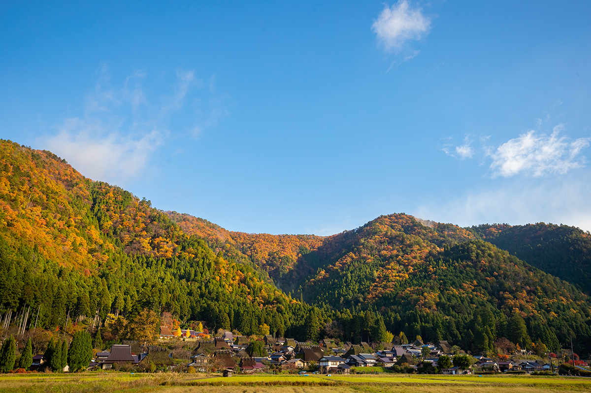
Мияма в лесах посередине префектуры и Минамиямасиро на её южной границе совсем не похожи друг на друга. Но в обоих местах старые дома, статуи и пейзажи показывают Киото, которого не увидишь в городе.
Мияма
Деревня, которую берегут сами жители
Мияма-тё входит в город Нантан и лежит почти в центре префектуры Киото, в полутора часах езды на машине от города Киото. Вокруг леса и чистые реки, а старый уклад здесь заметен на каждом шагу. Самое известное место округи это деревня Каябуки-но сато, «деревня соломенных крыш». В 1993 году её включили в число охраняемых государством районов традиционной застройки. Ценят её не только за вид: здесь из поколения в поколение передают деревенский уклад и умение крыть дома соломой.
Весной и осенью, когда приезжает больше всего туристов, в деревне проводят общий пуск воды. Жители проходят учения по пожарной безопасности и разом проверяют водяные пушки. Смотреть на это могут и гости: так проще понять, почему старые дома приходится беречь от огня. По тому, как здесь готовятся, видно, насколько местным дороги их соломенные крыши.
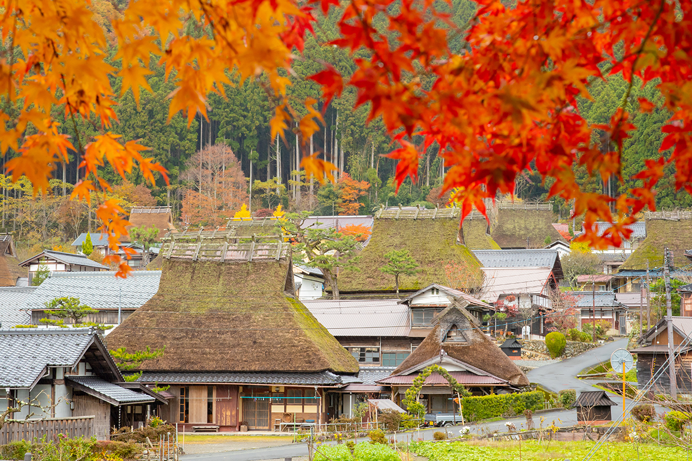
Из 50 домов деревни 39 до сих пор покрыты соломой. 8 декабря 1993 года деревню внесли в государственный список за сохранность построек, возведённых традиционными приёмами, и всего исторического пейзажа.
Сюда переезжают и люди со стороны. Лесное хозяйство и земледелие, которыми живут местные, тесно связаны друг с другом, и именно вместе они сохранили этот пейзаж до наших дней. В Мияме легко поймать себя на мысли, что однажды хотелось бы здесь пожить.
Каябуки-но сато
- Адрес
- префектура Киото, Нантан, Мияма-тё, Кита
- Телефон
- +81 771-75-1906 (справочная по туризму Миямы)
- Часы работы
- зависят от заведения
- Сайт
- miyamanavi.com
Индиго
Музей под самой большой крышей деревни
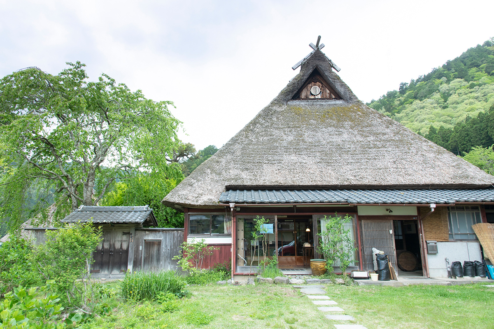
Среди соломенных крыш Каябуки-но сато выделяется одна, особенно большая. Под ней работает частный музей, который открыл мастер крашения индиго Хироюки Синдо. Он переехал в Мияму в 1981 году ради того, что нужно для индиго: природной воды и золы. Мастер обходится без химии: он красит ткани природным индиго, которое сбраживают. В 2005 году он открыл «Маленький музей индиго», а к 2023 году вместе с ним работал и его сын.
На первом этаже, в земляной прихожей, в пол вкопаны чаны с краской, и можно увидеть, как индиго красили в старину. Под крышей устроена галерея: здесь выставлены ткани и материалы об индиго, которые мастер собрал по всему миру. Билет стоил 300 иен в 2023 году.
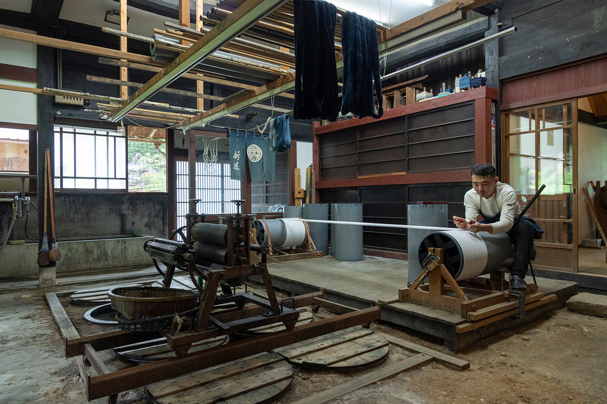
«Маленький музей индиго»
- Адрес
- префектура Киото, Нантан, Мияма-тё, Кита, Камимаки, 41
- Телефон
- +81 771-77-0746
- Часы работы
- 11:00–17:00
- Выходные
- четверг и пятница (в праздники открыт); зимний перерыв объявляют в Instagram
- Цены / Вход
- 300 иен
У очага
Youluly: обед у очага ирори
Соломенные крыши можно увидеть не только в Каябуки-но сато. В деревне Морисато такой дом занимает Youluly, где кормят и принимают на ночь, и здесь можно попробовать еду именно Миямы.
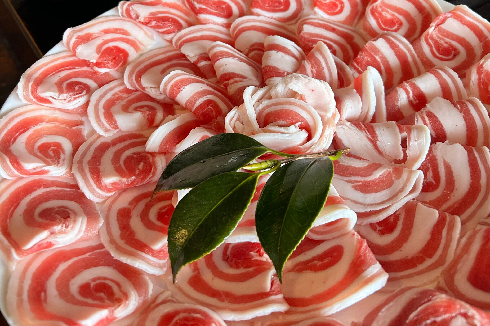
Готовят из сезонных овощей и местной курицы «Мияма кё-дзидори», подают сетом. В свой сезон у очага ирори можно попробовать дикую речную рыбу аю из Миямы или ботан-набэ, кабанье рагу в котелке. Ночлег и ужин доступны только одной компании в день. Ночь в 2023 году стоила от 25 000 иен.
Youluly
- Адрес
- префектура Киото, Нантан, Мияма-тё, Морисато, Сано-маэ, 15
- Телефон
- +81 771-76-0741
- Часы работы
- обед с 12:00, ужин с 18:00 (только по предварительной записи)
- Выходные
- нерегулярные
Ночлег
NIPPONIA: жить как местный
В деревне Цуругаока в июле 2023 года открылся NIPPONIA Miyama Tsurugaoka, гостиница в старых деревенских домах. Её сделали вместе с местными жителями, которые хотели сохранить облик деревни, и гости живут здесь почти как соседи.
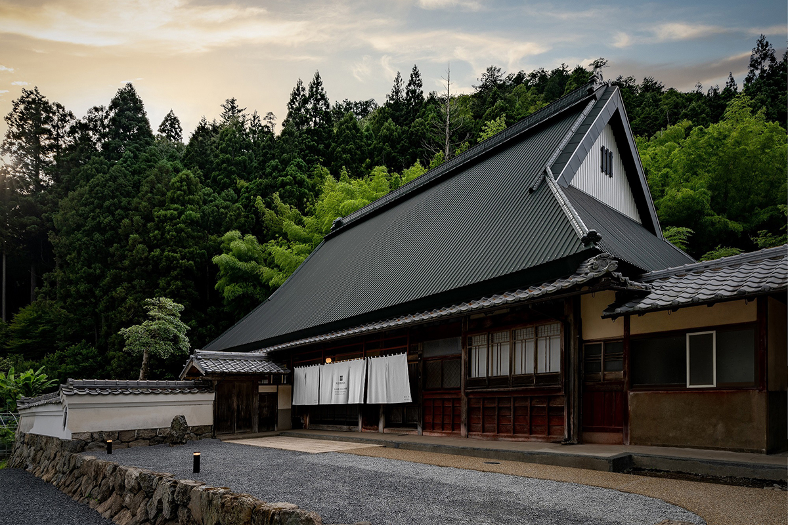
Это гостиница, разбросанная по деревне: старые дома Цуругаоки отремонтировали и превратили в номера. Можно взять только ночлег или ночлег с завтраком, а можно тариф с ужином в местных заведениях, в том числе в Youluly. Так гостиница держит связь с жителями.
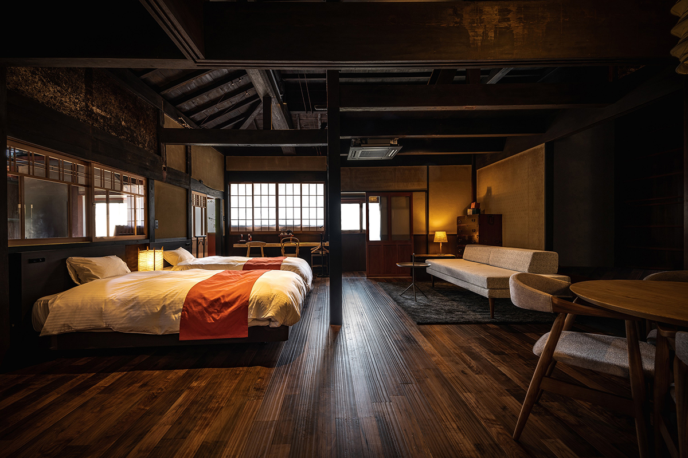
NIPPONIA Miyama Tsurugaoka
- Адрес
- префектура Киото, Нантан, Мияма-тё, Цуругаока, Син-Сякадо-маэ, 1
- Телефон
- 0120-203-099 (бесплатный номер внутри Японии)
- Цены / Вход
- дом целиком от 50 600 иен
- Заезд / выезд
- 14:00 / 10:00
Минамиямасиро
Девять будд Дзёрури-дзи
Минамиямасиро лежит на самом юге префектуры, у границы с префектурой Нара, и здесь разбросаны храмы, основанные ещё в древности. Особенно много прекрасных статуй сделали в эпоху Хэйан (794–1185), когда здешние храмы сблизились с большими монастырями Нары и столичной знатью. Аристократы мечтали переродиться в Чистой земле будды Амиды, и в моду вошло ставить в один зал сразу девять статуй Амиды.
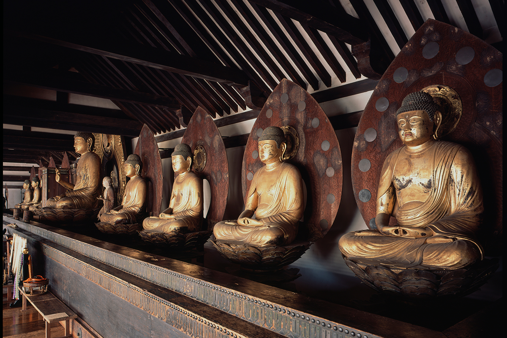
Храм Дзёрури-дзи, который зовут ещё Кутай-дзи, «храмом девяти статуй», единственный, где такие статуи и зал той эпохи дошли до наших дней. Скульптуры возрастом в сотни лет сохранились потому, что их снова и снова чинили люди, решившие их сберечь. В 2018–2022 годах здесь прошла первая за 110 лет реставрация, со времён эпохи Мэйдзи. В 2020 году из зала вывезли самую большую, центральную статую, а в остальные годы по две.
Осенью 2023 года одну из статуй вместе с буддами храма Кайдзюсэн-дзи показывали в Токийском национальном музее. Все девять должны были вернуться в Дзёрури-дзи к концу 2023 года.
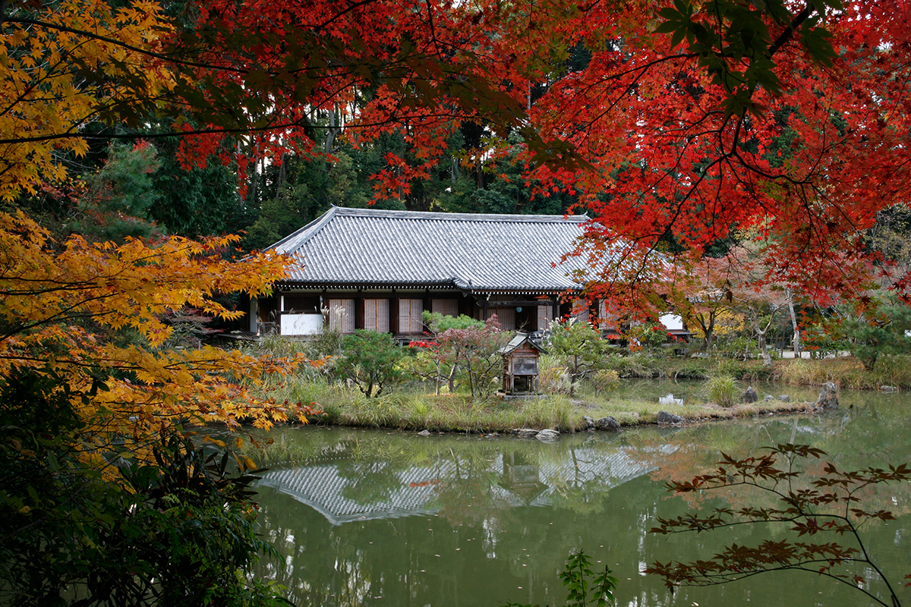
Основание храма связывают с императором Сёму (701–756). Он правил в эпоху Нара, строил храмы по всей стране и, по преданию, поручил основать Дзёрури-дзи монаху Гёки (668–749), проповеднику, который ходил по стране, строил мосты и пруды и помогал возводить храм Тодай-дзи в Наре. В конце эпохи Хэйан здесь поставили зал Амиды для девяти статуй, отсюда и второе имя храма. Посмотреть можно и сад, который изображает Чистую землю. Вход стоил 400 иен в 2023 году.
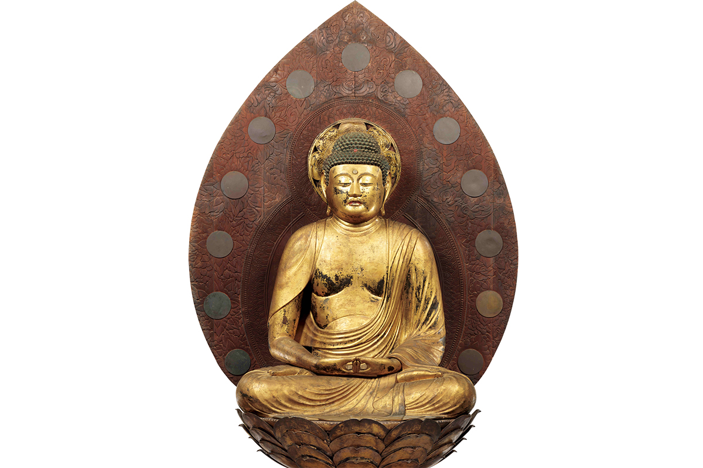
Храм Дзёрури-дзи
- Адрес
- префектура Киото, Кидзугава, Камо-тё, Ниси-Офудаба, 40
- Телефон
- +81 774-76-2390
- Часы работы
- 9:00–17:00 (декабрь–февраль 10:00–16:00)
- Выходные
- нет
- Цены / Вход
- 400 иен
Пагода
Кайдзюсэн-дзи: красная пагода на склоне
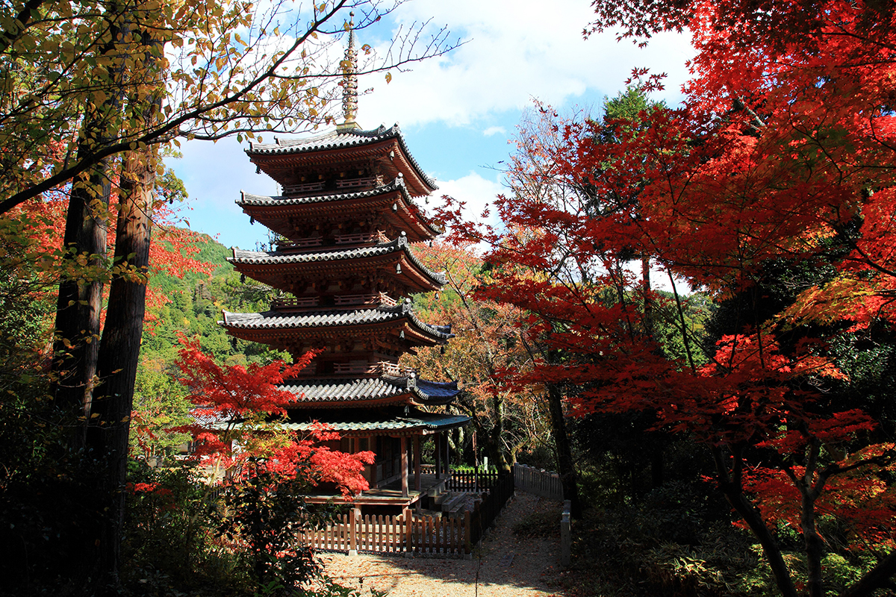
Храм стоит на середине горного склона и ведёт историю с 735 года. Его, по преданию, основал по воле императора Сёму монах Рёбэн (689–773), первый настоятель храма Тодай-дзи. Главная святыня храма это статуя одиннадцатиликой Каннон. Рядом с главным залом поднимается красная пятиярусная пагода эпохи Камакура (1185–1333), национальное сокровище: на фоне гор она особенно хороша. Вход стоил 500 иен в 2023 году.
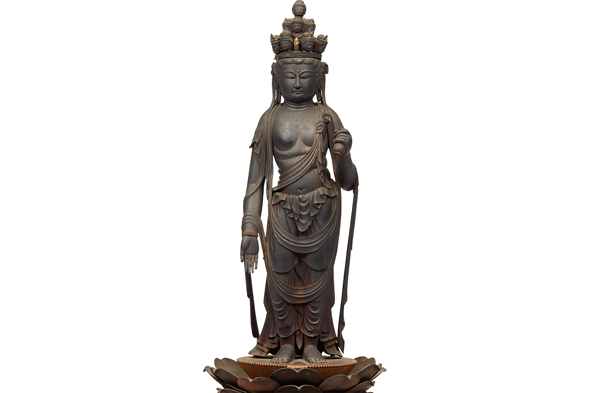
Храм Кайдзюсэн-дзи
- Адрес
- префектура Киото, Кидзугава, Камо-тё, Рэйхэй, Кайдзюсэн, 20
- Телефон
- +81 774-76-2256
- Часы работы
- 9:00–16:30
- Выходные
- нет
- Цены / Вход
- 500 иен (во время особых показов культурных ценностей отдельная плата)
- Сайт
- kaijyusenji.jp
Сезоны
Гансэн-дзи: храм среди гор
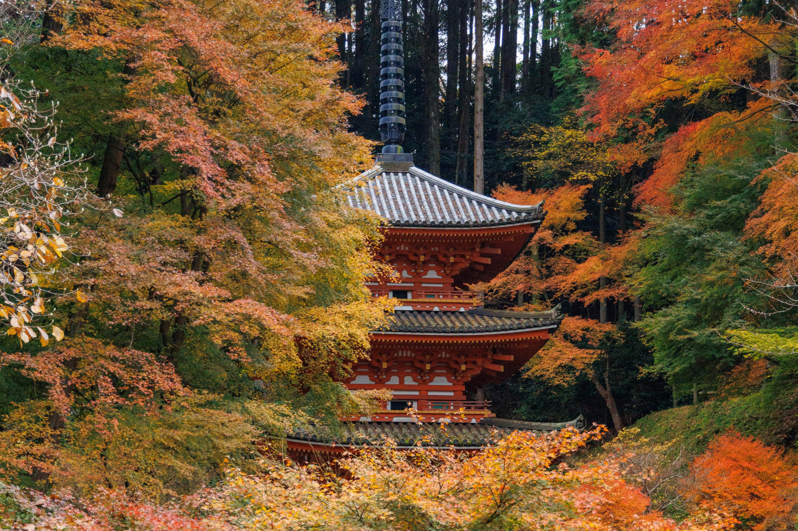
По преданию, в 729 году император Сёму поручил монаху Гёки, который жил тогда в уединении в горах, построить здесь небольшой зал Амиды. Каждая эпоха оставила храму свои шедевры: статую Амиды и бодхисаттву Фугэн на слоне эпохи Хэйан, каменные пагоды в тринадцать ярусов и пять ступеней эпохи Камакура, трёхъярусную пагоду эпохи Муромати (1336–1573). Все они признаны важными культурными ценностями. Вход стоил 500 иен в 2023 году.
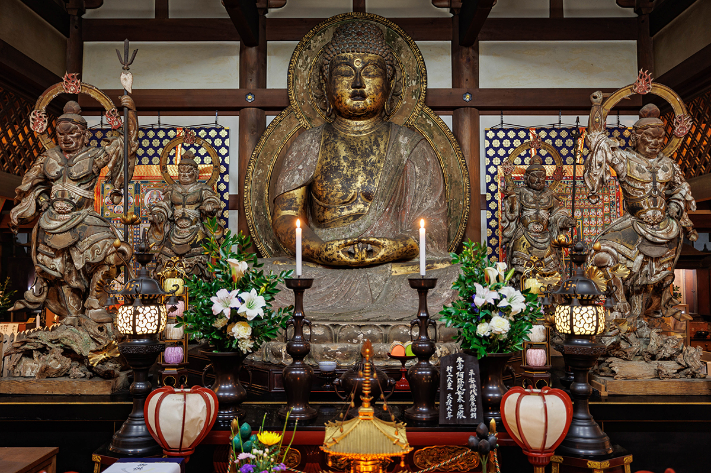
Храм Гансэн-дзи
- Адрес
- префектура Киото, Кидзугава, Камо-тё, Ивафунэ, Каминомон, 43
- Телефон
- +81 774-76-3390
- Часы работы
- март–ноябрь 8:30–17:00 (вход до 16:45), декабрь–февраль 9:00–16:00 (вход до 15:45)
- Выходные
- нет
- Цены / Вход
- 500 иен
- Сайт
- gansenji.or.jp
Чай
Исидэра: чайные поля до самого неба
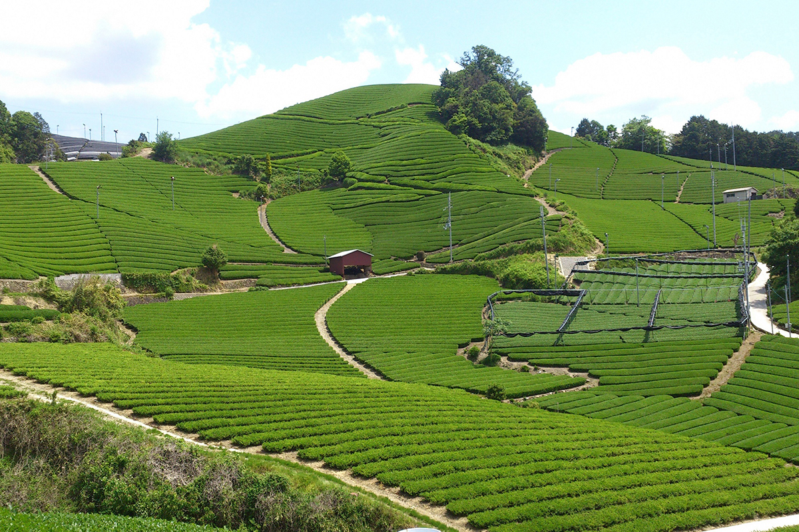
Городок Вадзука называют «краем истоков чая»: здесь растят знаменитый чай Удзи. Самый впечатляющий вид открывается в Исидэре, где чайные плантации поднимаются по крутым склонам к самым вершинам. Весной к зелени чайных рядов добавляются цветущие сакуры.
Чайные поля Исидэры
- Адрес
- префектура Киото, Сораку-гун, Вадзука-тё, Исидэра, около Марудзуки
- Телефон
- +81 774-78-0300 (туристическая справочная Вадзуки)
Кафе
«Нэкопан» в бывшей школе
Кафе «Нэкопан» устроилось в здании бывшей начальной школы Таяма, и школьная обстановка навевает ностальгию. Работает оно в основном по выходным. Здесь пекут свои бейглы из сезонных продуктов и готовят напитки, всё можно взять с собой. Есть и галерея, где выставляют и продают работы мастеров. Бейгл стоил от 250 иен в 2023 году.
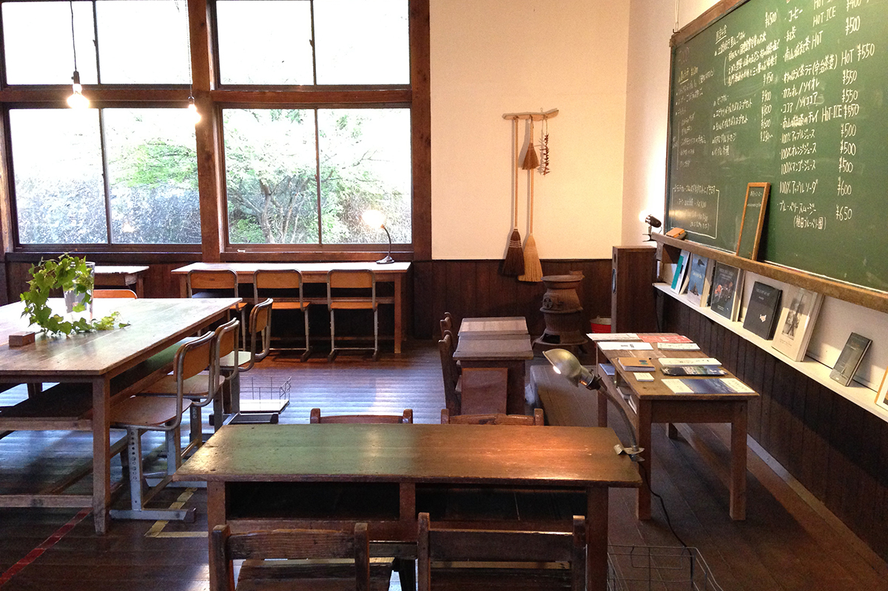
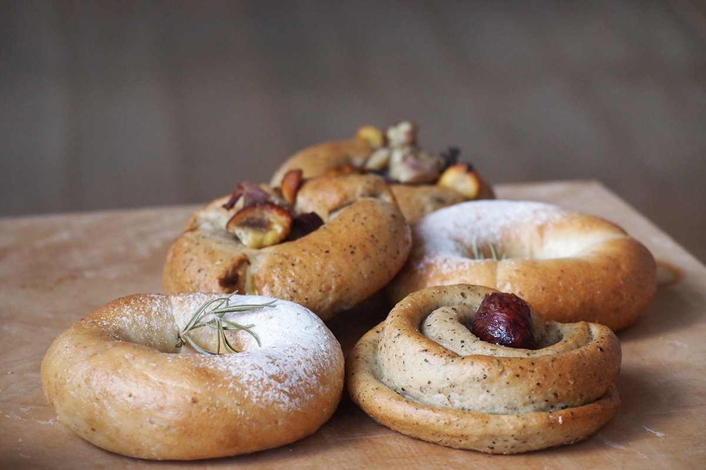
Кафе «Нэкопан»
- Адрес
- префектура Киото, Сораку-гун, Минамиямасиро-мура, Таяма, Накасиёдзи, бывшая начальная школа Таяма
- Телефон
- +81 80-2433-7272
- Часы работы
- 1-е, 2-е и 3-и суббота и воскресенье месяца, 11:00–17:00
- Выходные
- с понедельника по пятницу, 4-е суббота и воскресенье
- Сайт
- cafenekopan.com
Отель
Fairfield by Marriott у придорожной станции
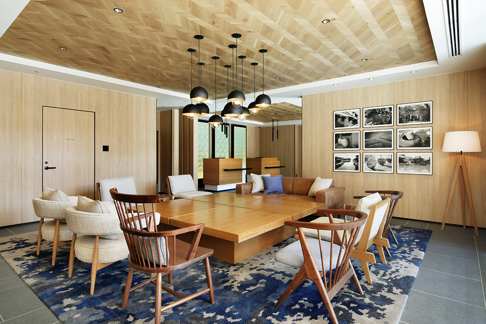
Fairfield by Marriott Kyoto Minamiyamashiro удобно сделать базой, чтобы узнавать округу. В лобби есть уголок с местными ремёслами и книгами и бесплатная кофемашина, в номерах удобные кровати. Особенность отеля в том, что ресторана в нём нет: есть ходят в окрестные заведения. Ночь в 2023 году стоила от 15 730 иен.
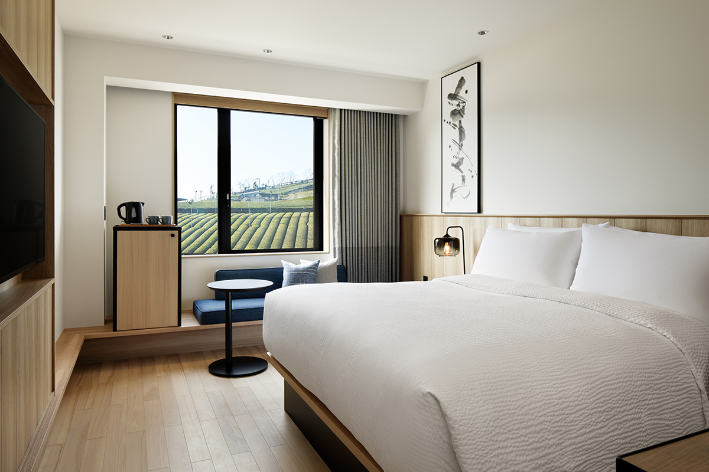
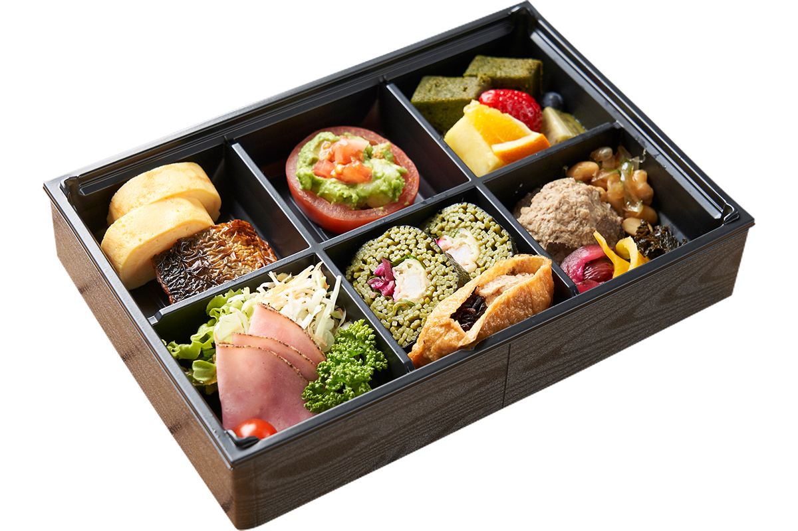
Fairfield by Marriott Kyoto Minamiyamashiro
- Адрес
- префектура Киото, Сораку-гун, Минамиямасиро-мура, Китаогавара, Тонода, 105
- Телефон
- +81 6-6743-4750
- Цены / Вход
- от 15 730 иен за ночь
- Заезд / выезд
- 15:00 / 11:00
- Сайт
- marriott.com
Фото: Ай Накагава, Miyama DMO, Асукаэн.